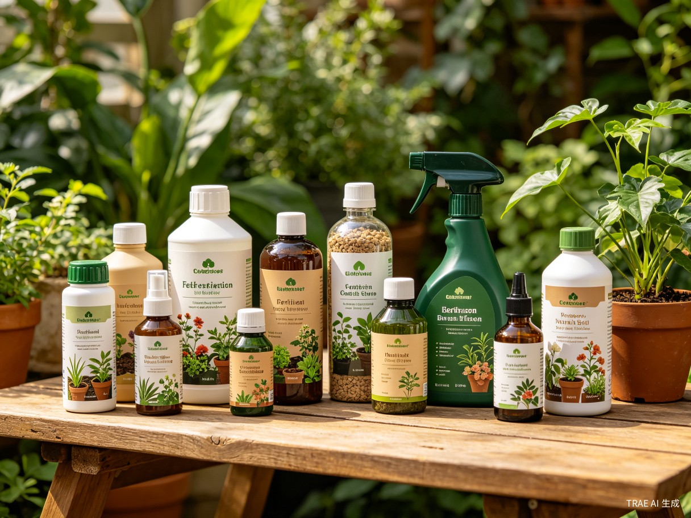

养花圈里流传着一句经典口诀——"薄肥勤施，越长越好"。很多新手把植物买回家后，浇浇水就觉得万事大吉了，却忽略了施肥这个关键环节。结果植物越长越瘦、叶子越来越黄，最后只剩下一个空花盆。
施肥不像浇水那样每天都要关心，但它对植物的长期健康至关重要。今天这篇文章，帮你从零搞懂施肥的全部要点，让你从此告别"养啥死啥"的魔咒。
一、植物缺肥的5个信号
植物不会说话，但它们会通过叶片、茎干和花朵给我们发出求救信号。以下5个现象出现了，大概率说明你的植物需要补肥了：
-
1
老叶发黄、整体颜色变淡
植物缺氮的最典型表现。老叶从叶尖开始均匀变黄，整株颜色从深绿变为浅绿甚至黄绿。这是因为氮元素是可移动元素，植物优先将老叶中的氮转运给新叶使用。
-
2
生长停滞、新叶又小又薄
如果植物长期没有新叶冒出，或者新叶明显比老叶小很多，说明缺乏综合营养。健康的植物在生长季应该持续有新叶萌发，新叶大小应与老叶相当或更大。
-
3
叶片边缘焦枯、叶尖发褐
典型的缺钾症状。先是老叶边缘发黄，然后逐渐变为褐色、焦枯，看上去像被火烧过一样。严重时整片叶子都会卷曲变形。
-
4
叶脉间失绿（叶片黄白但叶脉仍绿）
缺铁或缺镁的经典标志。叶片整体变黄甚至变白，但叶脉仍然保持绿色，呈现清晰的"网格状"纹理。新叶比老叶更容易出现此症状。
-
5
开花少、花苞掉落、花色暗淡
缺磷的常见表现。花芽分化需要充足的磷元素供应。如果植物到了花期却迟迟不开花，或者花苞刚形成就掉落，花朵数量少、颜色不够鲜艳，多半是缺磷了。
重要提醒：出现上述症状时，先排除浇水问题（烂根也会导致黄叶），再判断是否缺肥。如果确认是缺肥，优先补充氮磷钾均衡的复合肥，而非单一元素肥料。
二、肥料类型对比表
市面上的肥料五花八门，液体肥、颗粒肥、缓释肥、有机肥……到底该选哪一种？下面这张对比表帮你一次搞清楚：
| 肥料类型 | 主要成分 | 肥效速度 | 适用场景 | 注意事项 |
|---|---|---|---|---|
| 液体速效肥 | 氮磷钾水溶液，含微量元素 | 快（3-7天见效） | 生长期追肥；出现缺肥症状时的紧急补肥；观花植物花期前催花 | 必须严格按说明稀释，浓度宁可偏低不可偏高；避免喷到花朵上 |
| 缓释颗粒肥 | 树脂包膜氮磷钾颗粒 | 慢（持续3-6个月） | 日常基础养护；换盆时拌入土壤作为基肥；长期外出无法频繁施肥时 | 不要直接接触根系，需与根系间隔2-3厘米土层；夏季高温时释放加快，注意观察 |
| 有机肥 （蚯蚓粪/腐熟羊粪/饼肥） |
有机质、腐殖酸、多种微量元素 | 中等（2-4周见效） | 改良土壤结构；提升土壤微生物活性；有机种植爱好者 | 必须使用充分腐熟的有机肥，生肥会烧根并产生异味；室内使用建议选择无味型 |
| 营养棒/肥片 | 压缩复合肥，缓慢溶解 | 慢（1-2个月） | 懒人首选，直接插入土中即可；水培植物专用肥片 | 根据花盆大小控制用量，小盆半根即可；不要集中插入同一位置 |
| 叶面肥 | 高浓度微量元素+氨基酸 | 极快（1-3天见效） | 叶片发黄急救；观叶植物叶面光泽提升；微量元素快速补充 | 避开强光时段喷施（清晨或傍晚）；叶片有绒毛的植物（如非洲堇）不宜使用 |
| 自制肥 （淘米水/果皮酵素/蛋壳粉） |
有机质、少量氮磷钾、钙 | 慢且不稳定 | 无成本、环保；适合有经验的爱好者尝试 | 淘米水需发酵后使用，直接浇灌会发酵产热烧根；自制肥肥效不稳定，新手慎用 |
新手选肥建议：新手建议从液体速效肥+缓释颗粒肥的组合入手。液体肥用于生长期追肥，缓释肥用于上盆时做基肥。两个搭配使用，基本覆盖了植物全年所需。
三、施肥频率四季表
不同季节植物的生长状态不同，对肥料的需求差异很大。以下是一份通用的大多数室内植物四季施肥参考表：
| 季节 | 施肥频率 | 推荐肥料类型 | 施肥时间 | 注意事项 |
|---|---|---|---|---|
| 春季 (3月-5月) |
液体肥：10-14天/次 缓释肥：换盆时施一次 |
氮磷钾均衡型（20-20-20）；观花植物可适当提高磷比例 | 上午浇水后施肥 | 春季是植物生长旺季，需肥量最大；随气温回升逐步增加施肥频率；新叶萌发期可追一次薄肥 |
| 夏季 (6月-8月) |
液体肥：14-20天/次 （高温超过35度时暂停） |
氮磷钾均衡型，浓度降至正常的一半；观叶植物可偏重氮肥 | 清晨或傍晚凉爽时 | 高温天气植物进入半休眠，施肥需减量减频；切忌高温烈日下施肥；多肉、仙人掌类夏季休眠，应停肥 |
| 秋季 (9月-11月) |
液体肥：15-20天/次 （11月起逐步减少） |
以磷钾肥为主，减少氮肥；帮助植物增强抗寒能力 | 上午浇水后施肥 | 秋末气温降到15度以下时停止施肥；秋季施肥重在"收"，为过冬储备养分；11月底基本停止所有施肥 |
| 冬季 (12月-2月) |
停止施肥 （暖气房除外） |
不施肥 | 不施肥 | 绝大多数植物冬季休眠，施肥会打破休眠甚至烧根；北方暖气房温度维持在20度以上且光照充足的植物，可每月施一次极稀液肥（正常浓度的1/4） |
核心原则：施肥频率遵循"春多、夏少、秋减、冬停"的八字方针。宁可少施不可多施，宁可稀薄不可浓重。植物不怕饿一顿，但怕一次吃撑。
四、施肥四大禁忌
施肥不当比不施肥危害更大。以下四条是施肥的绝对禁区，犯了任何一条都可能要了植物的命：
禁忌一：浓肥烧根
"多施点肥长得快"是新手最常见的误区。肥料浓度过高会导致土壤溶液渗透压升高，根系细胞中的水分反而被"吸"出来，造成根系脱水、发黑、腐烂。这就是所谓的"烧根"。记住：严格按说明书稀释，宁可稀一倍也不要浓一毫。
禁忌二：休眠期施肥
冬季或高温夏季，许多植物进入休眠或半休眠状态，新陈代谢几乎停止。此时施肥，根系无法吸收，肥料堆积在土壤中反而会烧伤根系。尤其是多肉植物、仙人掌、球根类植物，休眠期施肥无异于"谋杀"。
禁忌三：新换盆立即施肥
换盆过程中根系难免受伤，需要2-3周的"缓苗期"来修复伤口和适应新环境。如果在缓苗期内施肥，肥料会刺激受伤的根系，引起感染腐烂。正确做法是换盆后至少等待3-4周，确认植物开始长新叶后再施肥。
禁忌四：干燥土壤直接施肥
盆土干燥时，肥料溶液浓度更高，更容易灼伤根系。正确做法是先浇一遍清水润湿土壤，等水渗下去之后，再浇稀释好的肥液。或者选择在正常浇水日，用肥液替代清水浇灌。
施肥安全流程：先浇清水润土（可选） 按说明稀释肥料 沿盆边均匀浇灌 浇后检查盆底是否有肥液流出 倒掉托盘多余肥水。
五、新手推荐施肥方案
面对琳琅满目的肥料，新手往往无从下手。以下是一套经过验证的简单高效方案，照着做就行：
基础配置（必备两件套）
方案一：液体通用肥 最推荐
适合人群：所有新手，尤其是只养了3-5盆植物的入门玩家。
推荐产品：选择氮磷钾比例为20-20-20（或类似均衡配比）的水溶性通用肥。常见品牌如花多多1号、美乐棵通用型液体肥等。
使用方法：取肥料瓶盖1/4的量（约2-3毫升），兑入1升清水中搅拌均匀。春夏生长季每10-14天浇一次，代替一次正常浇水。秋冬减量或停止。
优点：一瓶通用，操作简单，见效快，性价比高。
方案二：缓释肥+液体肥组合 进阶推荐
适合人群：植物数量较多（10盆以上），或经常外出无法定期施肥的爱好者。
推荐产品：奥绿缓释肥（通用型）+ 花多多1号液体肥。
使用方法：
- 缓释肥：换盆时混入土壤（每升土混合3-5克），或在盆土表面撒10-15粒，轻覆一层土。肥效持续3-6个月，一年施2-3次即可。
- 液体肥：在缓释肥的基础上，春夏生长旺季每2-3周补一次薄液肥，保证营养充足。
优点：缓释肥提供长效基础营养，液体肥灵活补充，搭配使用效果最佳。
特殊需求肥料（按需添加）
- 观花植物专用肥：氮磷钾比例约10-30-20，高磷促花。花期前一个月开始使用（如花多多2号）。
- 观叶植物专用肥：氮含量偏高，促进叶片浓绿肥厚。适合龟背竹、琴叶榕、绿萝等。
- 多肉专用肥：氮磷钾比例约5-10-10，低氮防止徒长。生长期每月一次即可，浓度减半。
- 铁元素补充剂（硫酸亚铁）：适用于喜酸植物（栀子花、杜鹃、茉莉等），每月一次，防止缺铁黄叶。
施肥记录表（建议养成习惯）
新手最怕忘记上次施肥的时间，导致要么重复施、要么漏施。建议在手机备忘录或日历中记录每次施肥的日期和肥料类型。以下是一个简单的参考模板：
| 日期 | 植物名称 | 肥料类型 | 用量 | 下次施肥计划 |
|---|---|---|---|---|
| 6月7日 | 龟背竹 | 花多多1号（20-20-20） | 2ml兑1L水 | 6月17日 |
| 6月7日 | 琴叶榕 | 奥绿缓释肥 | 12粒（表面撒施） | 9月7日 |
| 6月7日 | 蝴蝶兰 | 花多多2号（10-30-20） | 1ml兑1L水 | 6月21日 |
| 6月7日 | 多肉拼盘 | 多肉专用液肥 | 1ml兑2L水 | 7月7日 |
施肥是一门需要耐心体会的手艺。刚开始可能会有些不确定，但只要坚持"薄肥勤施、宁少勿多、休眠不施、干土不施"的十六字方针，你的植物一定会越长越旺盛，回报你满满的绿意与生机。